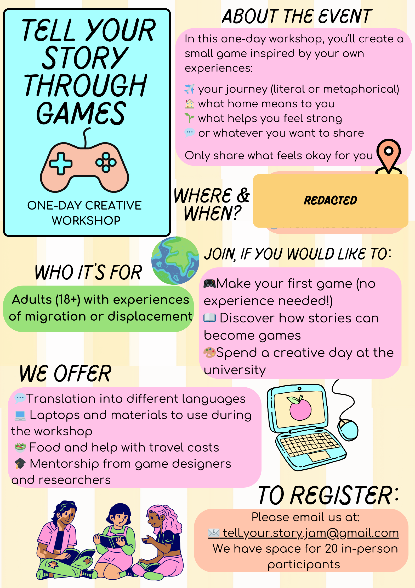

Participatory game design
Co-design, game jams, and research that gives something back.
Designing participatory games for catharsis, empowerment, and community healing — with a focus on migration and discplacement.
My dissertation explores how games can support emotional reflection (catharsis) and empowerment — especially in contexts shaped by displacement, trauma, and identity.

Co-design, game jams, and research that gives something back.
Games as a medium for lived experience, memory, and care.
How games support emotional reflection, resilience, and community healing.
A participatory game jam/workshop about migration, identity, and belonging — supporting people to create a small game inspired by their own experiences.

Selected publications + projects